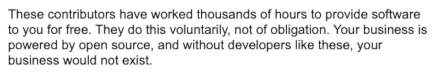

<!-- ##! New Vendor Lock -->

<!-- Open Source supposedly saves us from "vendor lock" &mdash; but does it really? Instead of corporate vendor lock into proprietary software, we now have... Open Source vendor lock into popular projects like WebPack. Most of the build pipelines are based on WebPack, Rollup and Babel. And to tell you the truth: Open Source vendor lock is even worse than corporate one, because it's popular Open Source developers of those projects who now think they're the rules of the world with all that popularity hitting their heads, while you're not allowed to raise any complaints about their software, because they're apparently volunteers providing software to you for free. -->

<!-- <p border rounded p-2 text-right box-shadow="0 3px 11px 5px lightsteelblue">
  
  <br><span text-monospace>^ In Open Source, you owe your life and business to maintainers for using their "free" software. It's a disgrace what this bunch have turned Open Source into.</span>
</p> -->

<!-- The situation is extremely hostile against people like myself who raise questions and doubts about where we're going, indicating the decadence of the scene and clinging to the power by those "leaders". No free speech is allowed that doesn't suit the newly established "elite". This article will never appear on any newsletter because they're afraid to face the truth. But don't worry about them &mdash; in 2020, we can move on to the new age tools that provide completely transparent experience, while treating YOU with respect, so that you can expect to be a VALUABLE and LOVED user, and not hostage to somebody's technology. -->

<!-- <section-break /> -->